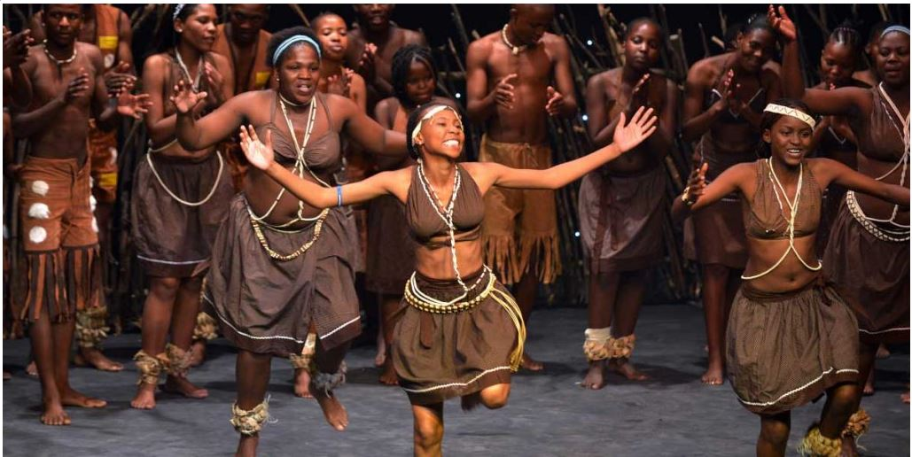
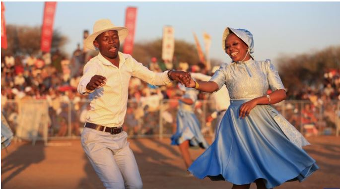
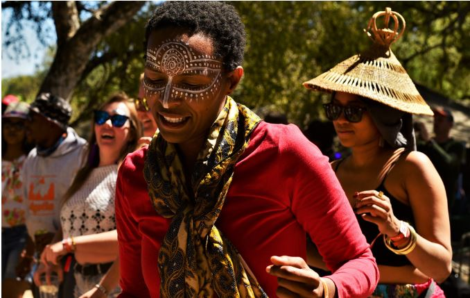
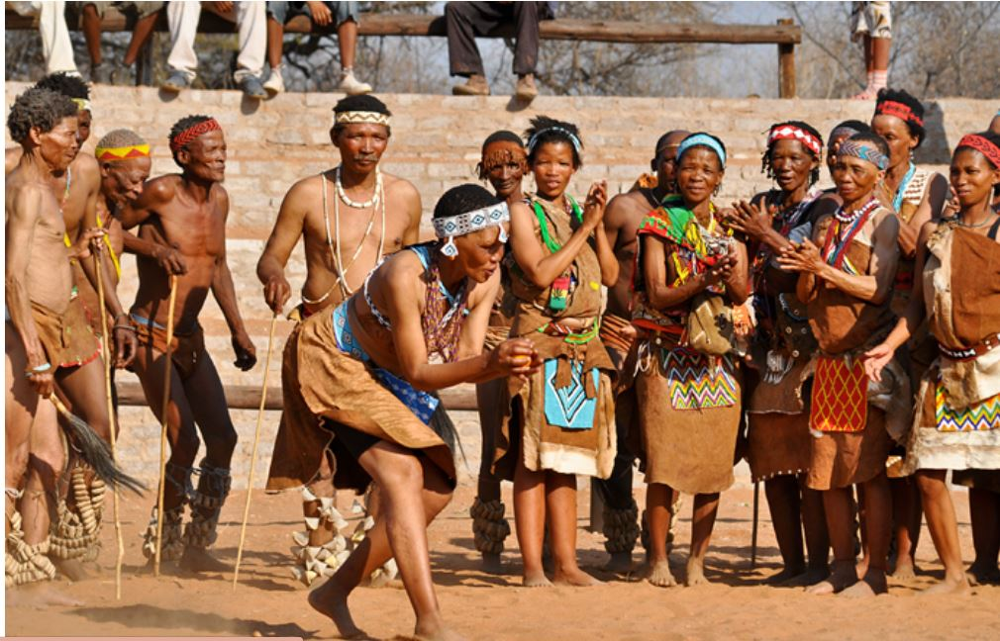
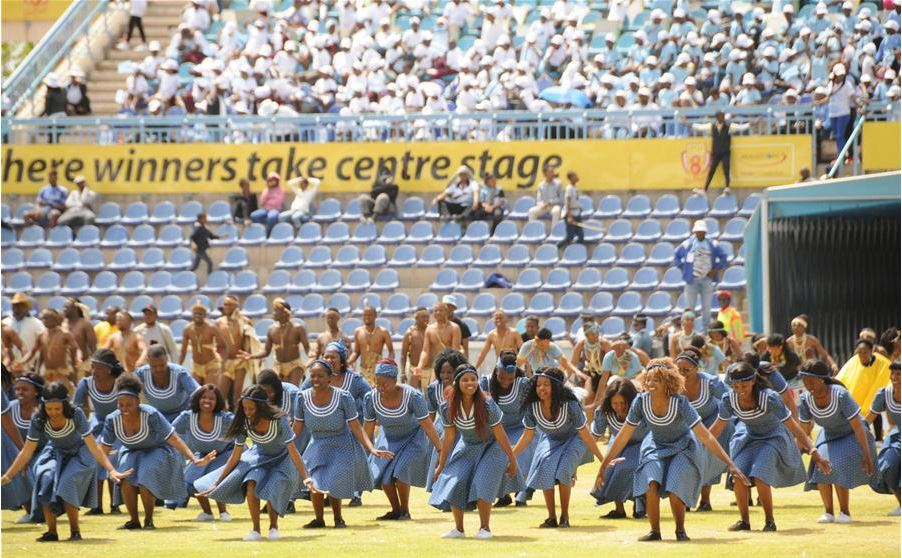
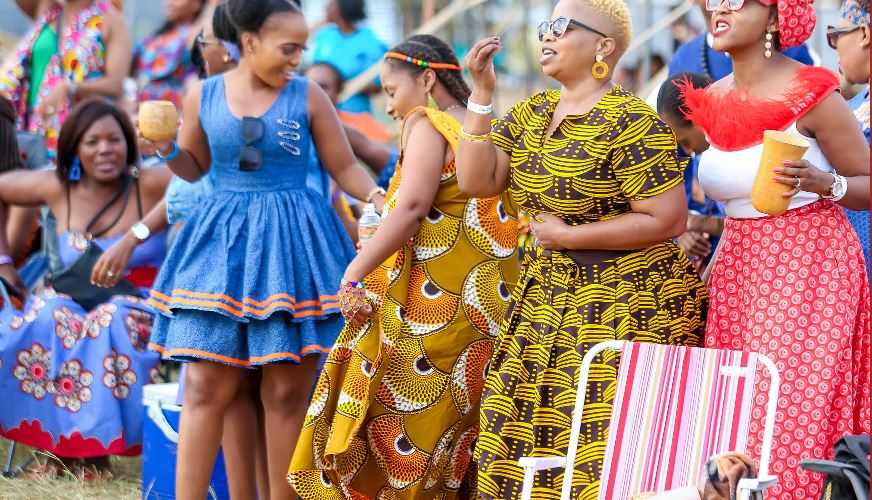
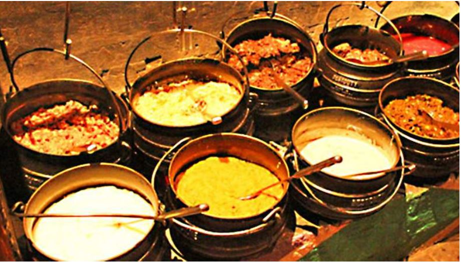

Celebrating Culture, Unity & Heritage
Festivals in Botswana bring people together through music, dance, storytelling, food and cultural pride. They are spaces where communities celebrate identity, honour traditions and welcome visitors.
From national celebrations to local cultural events, festivals reflect the warmth, joy and unity of Batswana people.

A celebration of Botswana heritage featuring traditional dance, music, clothing and cultural pride.

A lively event combining entertainment, tourism, music and community experiences in northern Botswana.

Celebrates San culture through dance, storytelling and traditional performances.

Botswana celebrates independence every 30 September with national pride, parades and community events.

Festival spaces are filled with drums, singing, movement and celebration. Traditional dances such as Setapa often bring energy and excitement to the crowd.
Music festivals also showcase modern Botswana artists, blending heritage with contemporary sound.

Festivals are also known for delicious food stalls offering dishes such as seswaa, bogobe, dikgobe and other local favourites.
Sharing food reflects Botswana hospitality and the spirit of community.
"To experience Botswana fully, experience its celebrations."
Tourists enjoy Botswana festivals because they offer authentic experiences beyond safari tourism. Visitors can meet local people, enjoy performances, learn traditions and experience Botswana’s warm atmosphere.